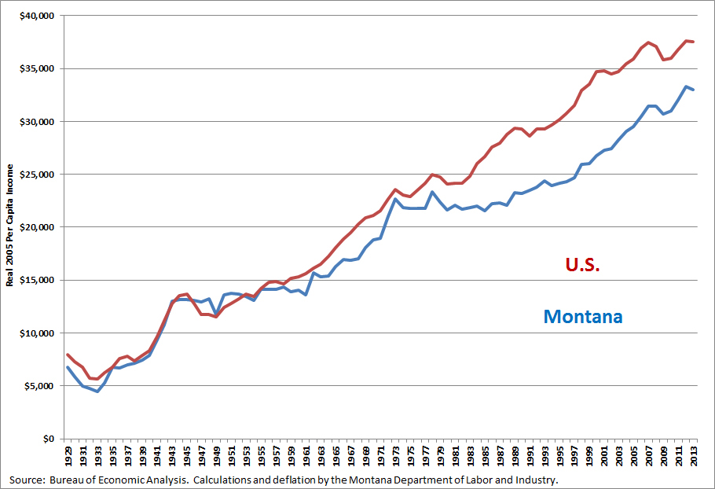
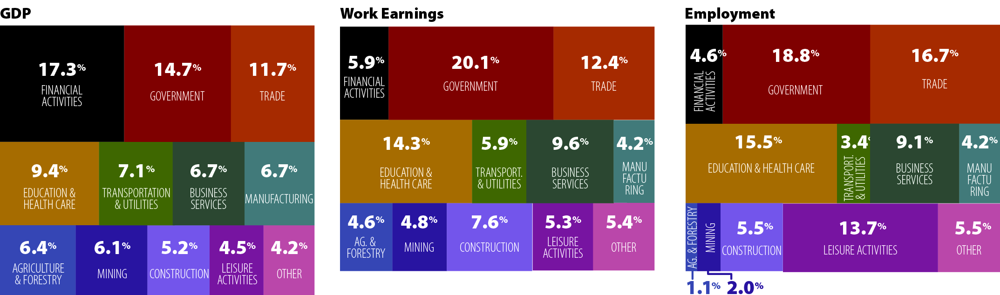
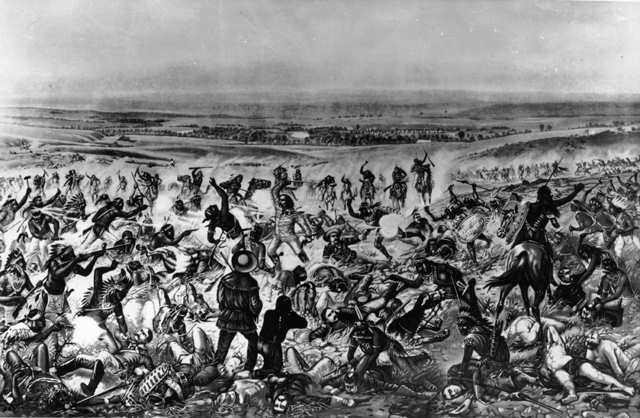

Montana není žádný ekonomický gigant. HDP země je něco přes 20 miliard dolarů, což je obrovské
množství
peněz, avšak v Americe ji to staví na 48. místo. Turistika hraje velkou roli a to až 30%
celkového HDP.
Hlavními tahouny turistiky jsou národní parky Yellowstone a Glacier National Park .
Dále je
zdejší ekonomiku důležitá těžba a to především uhlí, zlata, ropy a stříbra. Montanu a Českou
republiku
spojuje pivo.
Montana je státem s třetím největším počtem malých pivovarů na území Spojených států.

Graf ekonomické aktivity

Historie
V historii zde žilo spoustu indiánských kmenů, mezi nejznámější patřili například Černonožci, Atsinové
nebo
Absarokové. Dodnes se zde nachází několik indiánských rezervací. V roce 1803 koupili spolu s Louisianou
Montanu Spojené státy za 78mil franků (15mil dolarů). Obchod s kožešinou, který tady v nasledujících letech probíhal, sice přinesl domorodcům majetek,
zároveň ale způsobil šíření evropských nemocí, které silně ovlivnilo vztahy a celkovou ekonomiku.
Od 50.
do
70. let 19. století osidlovali osadníci indianská území, což vedlo k řadě konfliktů. Tyto boje polevily
v
roce 1855, kdy guvernér Isaac Stevens vyjednal smlouvu, stanovící hranice kmenů. I tak ale došlo k řadě
konfliktů, mezi největší patří například Mariaský masakr (1870) nebo bitva u Little Bighornu, která se
odehrála 25. června 1876. Tyto boje si vyžádaly také životy bizonů, kteří se z 13 milionů dostali na
pouhých
325 kusů (k dnešnímu dni).

Geografie
Montana je horský stát. Nachází se na severo-západě Států. Sousedí s Kanadou, Jižní a Severní Dakotou,
Wyomingem a Idaho. Rozlohou se jedná o 4. největší stát USA. Jak už jsem říkal, Montana je horský stát,
proto není žádné překvapení, že průměrná nadmořská výška je zde 1040m. Šířka a délka Montany je potom
450km
a 1015km.